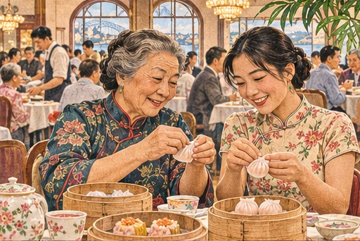
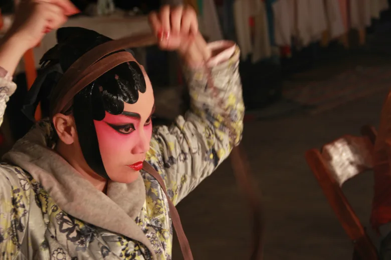
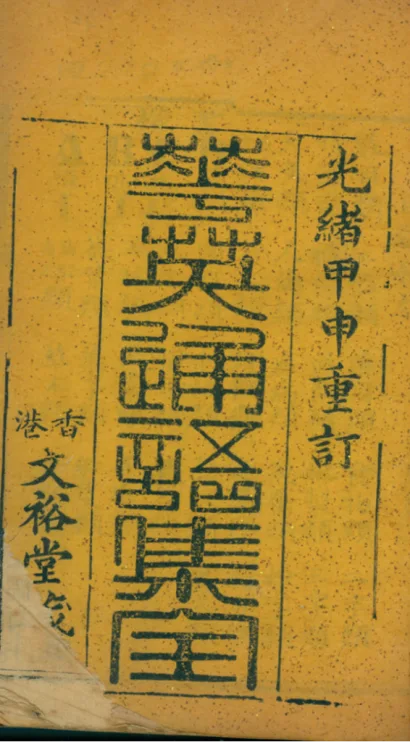

茶桌邊，聽得懂的第一句話
去茶樓飲早茶，有人斟茶，有人揭開蒸籠，還有人隔着兩張桌就叫出了街坊的名字。剛學粵語的小朋友，也許聽不全大人的閒談，卻知道一句「趁熱食」之後，碗裏就會多一隻蝦餃。
從廣州、香港到悉尼，不同人家有不同的口音。你小時候聽得最多的，是一句「飲茶啦」，還是有人推開門喊你的小名？
抬頭看窗，低頭看碟
在廣州和珠江三角洲，一些老屋的山牆像兩隻鍋耳，人們叫它「鑊耳牆」。走近窗邊，彩色玻璃嵌在木格里，欞花有海棠、方勝等式樣。再看一隻廣彩茶碟，匠人把花鳥收進掌心大的一圈盤沿。認識廣府文化，也可以從認出一個熟悉的形狀開始。


家鄉的名字，也跟着人走
家裏長輩説起「返鄉」，指的是哪一條村、哪一條街？對一些廣府家庭來説，尋根會走到廣東南雄的珠璣巷。江門新會的珠璣裏、佛山南海九江的珠璣岡，也把這個名字留在了後來生活的地方。
舊圖裏，一羣人站在磚拱門前，門額寫着「珠璣古巷」。這一頁下方印有「82」。整理者把它追溯到一本 1922 年出版的書，照片的拍攝年份尚待考。
翻看珠璣巷今昔圖集 · 查 1922 年原書書目 · 讀廣州日報的地名尋訪
2025 年，鄉親們在南雄參加第五屆世廣會。從韶關接旗到悉尼


從後台的一筆妝，到耳熟的一句歌
開鑼前，演員對鏡整理頭面。等到登台，一個尾音拖長，一個眼神遞出去，坐在台下的老戲迷就會意了。另一代人熟悉的鄉音，也許來自收音機裏的一首粵語流行曲：前奏才響起，已經跟着哼出了下一句。
2026 年 11 月，悉尼市政廳迎來「粵唱粵強」南太平洋賽區總決賽。走進悉尼的粵語歌會

一本從香港來到悉尼的會話書
這本《華英通語集全》的黃色扉頁上，還能讀到「光緒甲申重訂」。1884 年，香港文裕堂印行了這部會話書。如今它收藏在悉尼的 Ashfield。
另一頁上，一行英文題記留下兩個人的名字：梅光達（Quong Tart）把書贈給了僱員 Alf Hughes。一百多年後，我們還能在悉尼翻到這件小小的禮物。